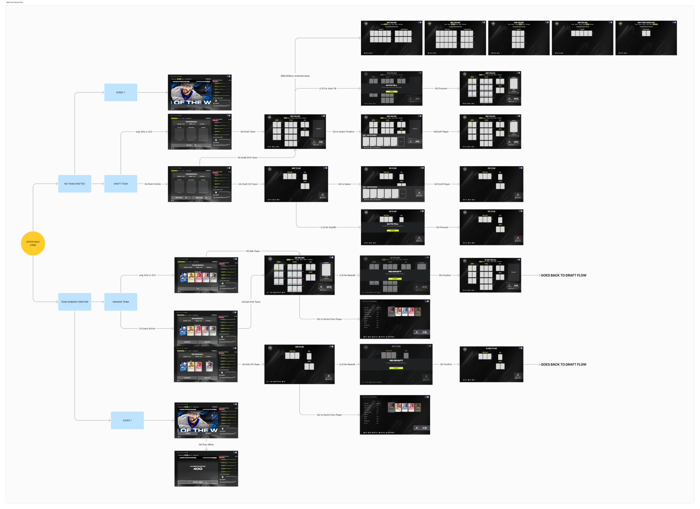

Hockey Ultimate Team: Wildcard Quest
ABOUT
Wildcard Quest is a new game mode within the EA SPORTS NHL's Hockey Ultimate Team (HUT). Wildcard Quest aims to bridge the experience gap between players who start mid-season and to also provide an authentic team building experience.
VIEW SLIDE DECKDURATION
6 Months
TEAM
Brandon Wu (Producer), Edwin Tang (UX Designer), Murphy Miu (Interface Designer)
ROLE
UX Designer
TYPE
Game UX
Problem Space
Hockey Ultimate Team (HUT) is NHL’s competitive, online mode that strives to provide hockey fans the greatest fantasy team experience, where players are able to acquire and assemble their dream team. However, over the years, players have expressed the difficulty of picking up the mode mid-season as well as lack of authenticity in the team building approach.
Players who play HUT Rivals and Squad Battles felt due to the nature of the modes, they needed to play constantly. This was usually either to keep up with other players or to remain competitive throughout the year. This is a barrier as this pressure eventually makes them churn when they can’t keep up.
HUT RESEARCH REPORT
2020
“There's some challenges you can go through, and you can earn your own things. It’s just super tedious time consuming things that just to me are not fun at all … and you just have to go through them all and for a little reward.”
EA SPORTS NHL PLAYER
2024
The nature of Hockey Ultimate Team, which is to play games, open packs, and continuously create a stronger team, makes it so that players who don’t start right at the start of the season are disadvantaged in comparison to those who do. Coupled with the expectation to “grind” in order to not fall behind was found to be too tedious for players. This makes the adoption of HUT for other mode players difficult, especially as HUT only provides sub-mode specific rewards.
Inauthentic Hockey Experience
The Team-building approach in HUT felt inauthentic to players, which is alarming as the mode promotes itself to be the greatest hockey team-building experience with no limitations.
Players expressed wanting more a more authentic and realistic team building experience.
5 EA SPORTS NHL PLAYERS
User Interviews
Solution: Wildcard Quest
Wildcard Quest provides players with a strategic deck building experience, which is intended to provide a simple and easy to jump in experience for both core veterans and new players.
With a Wildcard specific XP path that contributes to the overall unified XP Path that HUT also released in the same game, it will allow for players who start layer in the season to catch up to other traditional modes, such as Rivals and Squad Battles.
At a Glance Drafting View
As the purpose of Wildcard Quest is to provide the best drafting experience for players, it was important to consider how to present the lineup. With the mode introducing a pre-determined players (players that must be part of your lineup) and choice lock players (players that are locked in and cannot be switched out after drafting), it was vital to show players an overview of their team at a glance to strategically make decisions through their drafting process.
REUSING WHAT IS POSSIBLE

Considering the yearly release of the NHL franchise, it’s vital to reuse existing screens as necessary. The Wild Card draft screen shares the same layout as the existing HUT Lineup Share screen.
Even Playing Field: Drafting Restrictions
For each event in Wild Card Quest, there will be team restrictions- encouraging players to be creative with their drafting choices. This prevents players to stack their teams with only 99 OVRs and encourage a more even playing field, which is especially vital if the player is starting mid season.
“I like the idea of building rosters … but [in HUT] everyone’s looking for 99 overalls. Hockey is not about 99 overall players all across the board. I don’t want to play with freaking … my team is 99 all across the board and so was yours. That’s not competitive hockey to me. That’s just 2 titans going at each other trying to get the most goals. ”
USER INTERVIEWS
non HUT, NHL player, 2023
Data that Matters: Right Panel Widget
Along with introducing a new layout of the edit lines screens to promote “at a glance” visibility of the whole lineup, Wild Card Quest introduces a right panel widget that houses important information that players have noted as being crucial. As the new layout minimizes card art, the right panel shows a zoomed in mode to showcase card art that NHL HUT is known for. The right panel also shows active abilities to empower players to make more strategic drafting decisions.
*note that synergies is not part of NHL 25 Wild Card Quest. Therefore, focus was more on active abilities for the right widget.
50% of survey respondents strongly agreed that card art is vital to the experience of HUT
SURVEY INSIGHT
12 out of 14 survey respondents indicated that they look at abilities when looking at the player info screen for specific players
SURVEY INSIGHT
Wildcard Climb Reward Path
To allow for mid-season start players to catch up to players who started in the beginning of the season, Wildcard introduces a new reward path: the Wildcard Climb. Wildcard Climb will allow players to earn XP that will directly contribute to the single unified HUT reward path that is introduced in NHL 25.
The Handoff Process
Wildcard Quest being a completely new mode as well as having complexities of different screens states shared its share of difficulties when handing it off to developers. Traditionally, the team used to share wireframes and mocks to the dev team just as states. This would cause errors in the build because some components that should be hidden in certain states would be visible vice versa.
To improve this process, I took the liberty to pass off wireframes as wireflows, so that it would make more logical sense of why certain states and components were in specific screens at a specific time.
This also made the collaboration with the interface designers easier as I would layout all the possible states in the restriction widget so that the interface designers can provide accurate specs for all states to the development team.
Reflection
Wildcard Quest was the first feature I owned the whole UX for and I learned a lot as working at Electronic Arts was my first gig after graduating university. Game UX is messy and despite having a type A personality and struggling through the messiness, I learned that messiness often contributes to unconventional and smart solution building collaboration with cross-funcitonal teams.